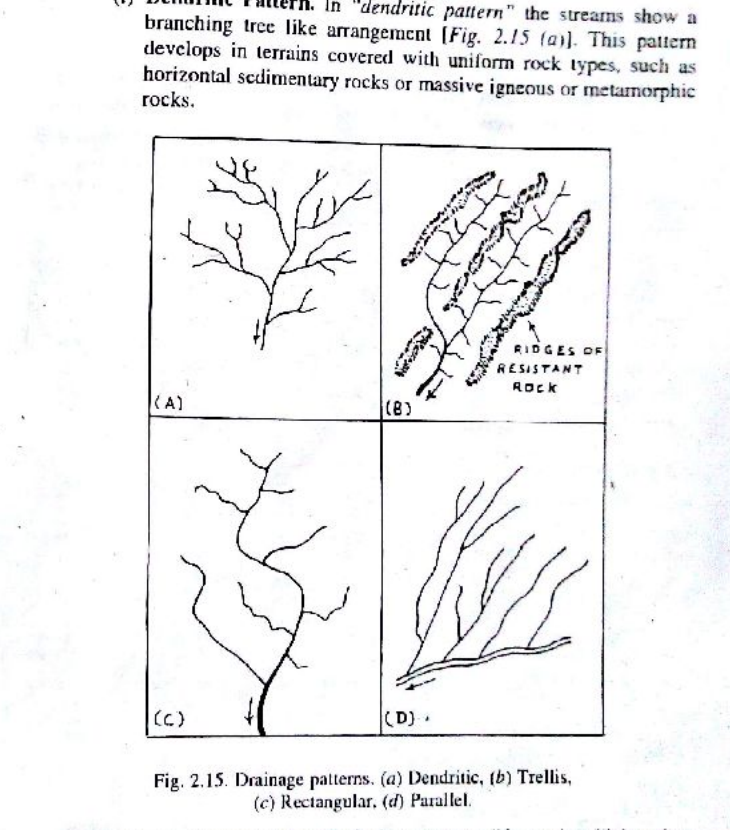
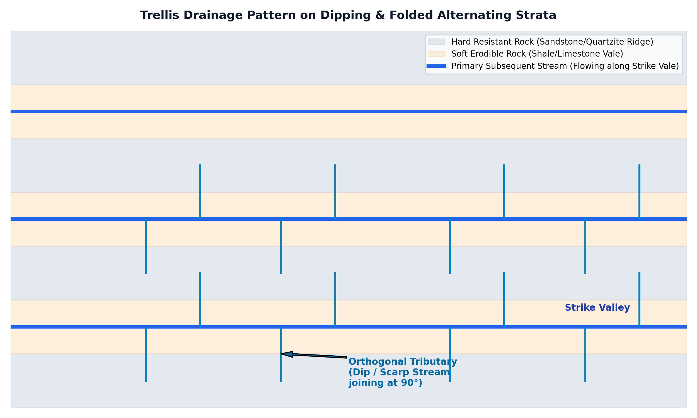

The geometric layout of a river network—its drainage pattern—is primarily governed by regional rock structure, varying lithological hardness, joint/fault fracture networks, and tectonic slope. In genetic fluvial geomorphology (W.M. Davis, 1899; Zernitz, 1932), streams within a drainage basin are genetically categorized relative to structural strike and dip:

When alternating resistant formations (quartzite, sandstone, limestone) and incompetent formations (shale, mudstone) are folded into synclines and anticlines or tilted into homoclinal ridges, differential erosion carves a series of parallel ridges and valleys:

Candidates must clearly differentiate trellis drainage from other geometric network patterns:
| Drainage Pattern | Geometric Geometry | Structural & Lithological Control | Type Indian / Global Field Terrane |
|---|---|---|---|
| Trellis | Parallel master streams along strike with orthogonal ($90^\circ$) dip/scarp tributaries | Folded or tilted sedimentary beds with alternating resistant/soft layers | Appalachian Valley & Ridge (USA); Cuddapah Basin (Andhra Pradesh) |
| Rectangular | Right-angled junctions and sharp bends without long parallel strike ridges | Intersecting orthogonal joint systems or fault lines in massive rocks | Jointed Bundelkhand Granite (MP/UP); Norwegian fjord bedrock valleys |
| Parallel | Elongated, uniformly spaced parallel channels running down-slope | Steep, uniform regional slopes or narrow coastal ramps | Western Ghats coastal plain (Konkan); young strato-volcano flanks |
| Dendritic | Tree-like branching with tributaries joining master streams at acute angles | Massive homogeneous crystalline rocks or horizontal sedimentary strata | Deccan Volcanic Province (Maharashtra); Indo-Gangetic Alluvial Plain |
| Radial | Streams radiating outward like spokes of a wheel from a central elevated apex | Volcanic cones, structural domes, isolated mountain massifs | Mount Girnar (Gujarat); Dalma Volcanics (Jharkhand) |
| Centripetal | Streams flowing inward from all directions toward a central depression | Inland drainage basins, sinkholes (dolines), calderas, structural basins | Lonar Crater (Maharashtra); Tibetan endorheic lake basins |
| Annular | Concentric circular paths tracing ring-like soft rock belts | Breached structural domes with alternating resistant and weak concentric rings | Black Hills dome (South Dakota, USA); Ramgarh Crater dome (Rajasthan) |